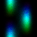

I. Hydrogen
I. Hydrogen: the lightest nucleus, and the fastest crossing, 290 femtoseconds from well to well.
retrocausal-echo-v1 · 484db3ab-4a72-4c55-9e69-bd26ac3246e8
a short piece in three movements and a coda

Cover: the proton's crossing, position across and time down, coloured by phase.
I. Hydrogen: the lightest nucleus, and the fastest crossing, 290 femtoseconds from well to well.
retrocausal-echo-v1 · 484db3ab-4a72-4c55-9e69-bd26ac3246e8
II. Deuterium: twice as heavy, so the crossing takes 5.3 times as long.
retrocausal-echo-v1 · 484db3ab-4a72-4c55-9e69-bd26ac3246e8
III. Tritium: three times as heavy, so the crossing takes 19.3 times as long.
retrocausal-echo-v1 · 484db3ab-4a72-4c55-9e69-bd26ac3246e8
Coda: the crossings continue as a melody, and an echo gives them a room.
qrc-midi-v1 · b6f554d7-089a-4204-9841-ef4ec8e8a25e · blur-midi-v1 · 3ce48680-cf94-47e7-9f38-369903d7ce21 · retrocausal-echo-v1 · c4236288-d0a0-4728-9450-c4ecf2f18710
The four tracks in order, with one second of quiet between tritium and the coda.
retrocausal-echo-v1 · 484db3ab-4a72-4c55-9e69-bd26ac3246e8 · qrc-midi-v1 · b6f554d7-089a-4204-9841-ef4ec8e8a25e · blur-midi-v1 · 3ce48680-cf94-47e7-9f38-369903d7ce21 · retrocausal-echo-v1 · c4236288-d0a0-4728-9450-c4ecf2f18710
Through the Wall, cover and pipeline by Lily S. Engines by Moth; Retrocausal Echo by Spencer Topel.